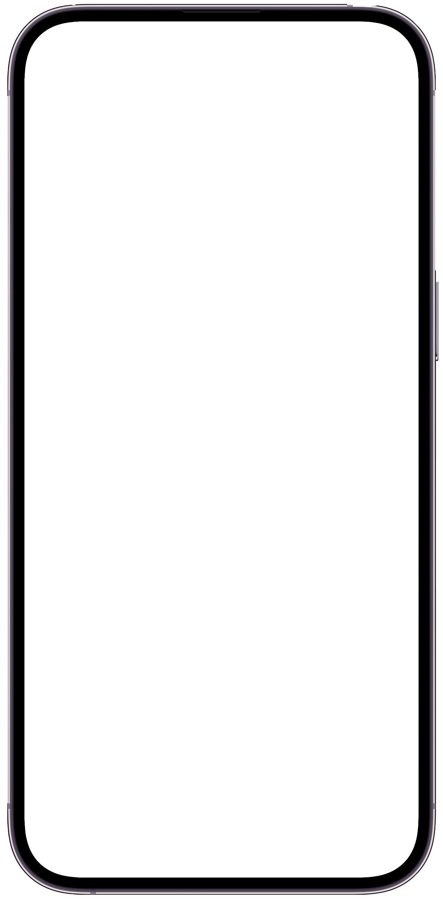
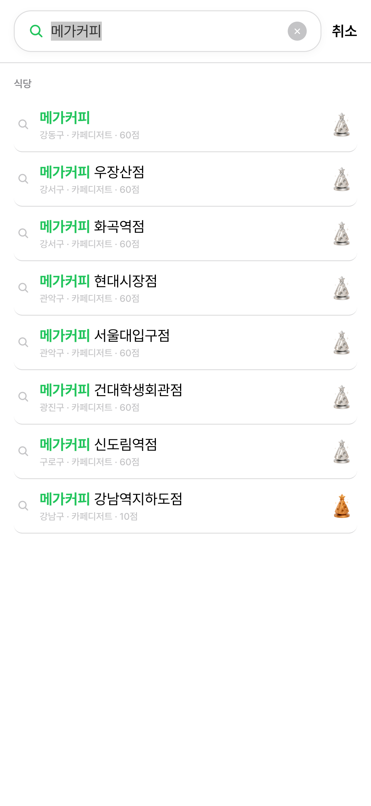
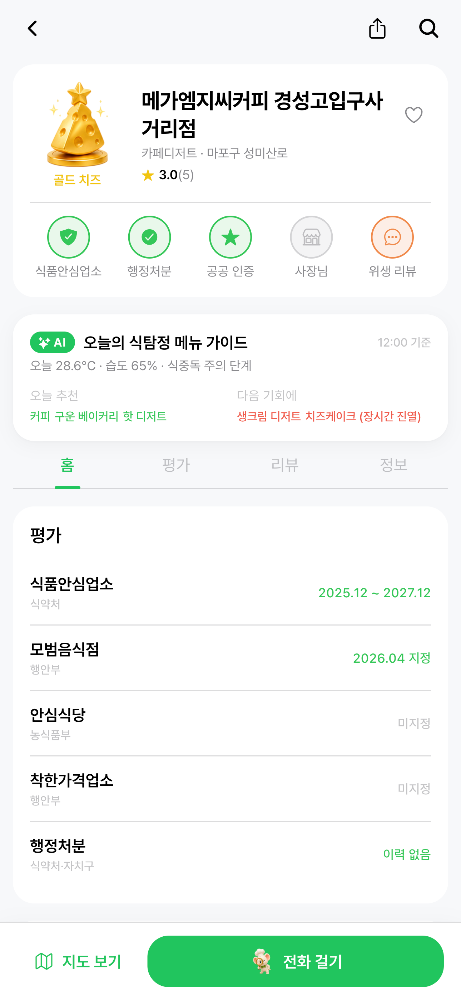
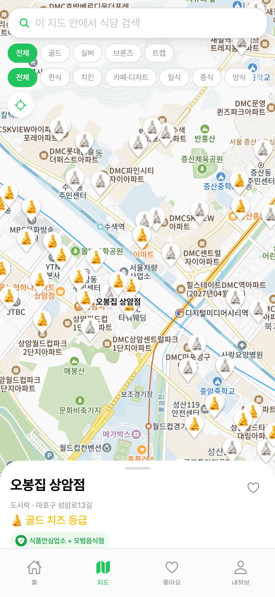
공공데이터·사장님 인증·사용자 리뷰를 종합해 식당 위생 신뢰도를 4단계 치즈 등급으로 표시합니다. 검색·지도·상세 어디서든 1초 안에 등급을 확인할 수 있어요.
식약처·자치구 행정처분에서 위생 직결 위반(이물·세균·유통기한 등)이 적발된 식당은 트랩 치즈로 자동 표시되고, 위반 사유 원문을 그대로 보여드립니다.
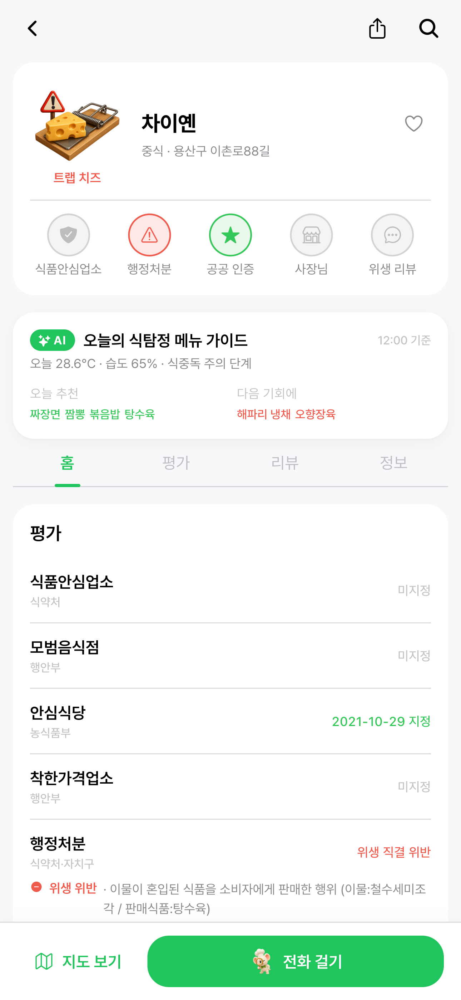
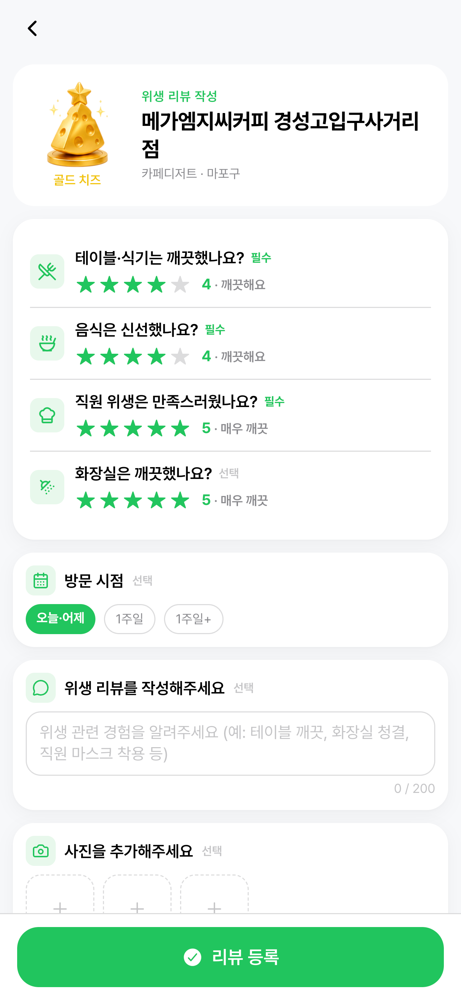
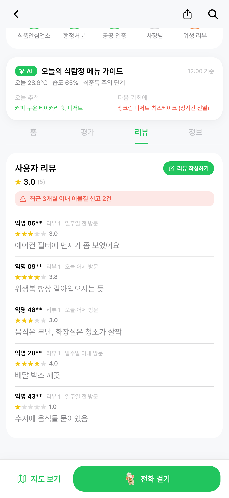
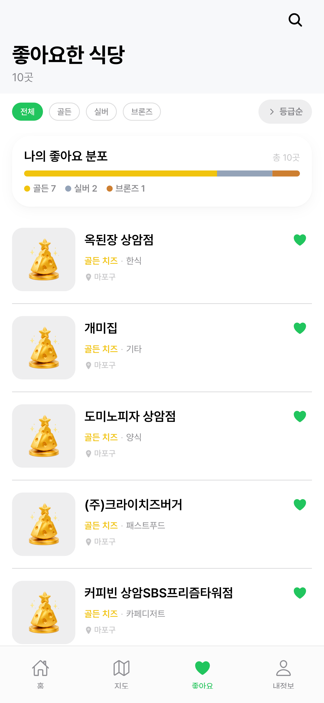
4축 별점(테이블·음식·직원·화장실)과 한줄평·사진으로 실시간 위생 정보를 공유합니다. 좋아요한 식당은 등급별 분포로 정리되어 한눈에 보여요.
사업자 인증을 거친 사장님은 청소·위생 활동을 직접 게시해 위생 점수를 가산받을 수 있어요. 지도와 검색 결과에서도 더 높은 등급으로 부각됩니다.
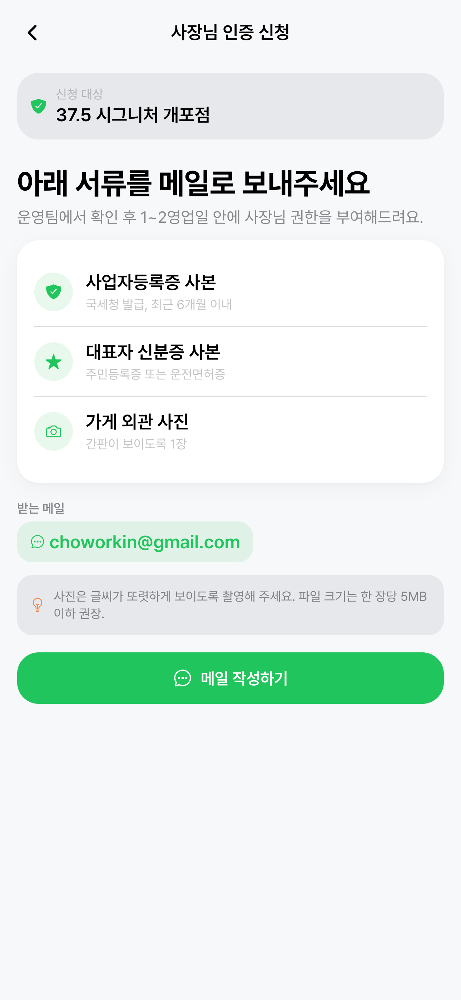
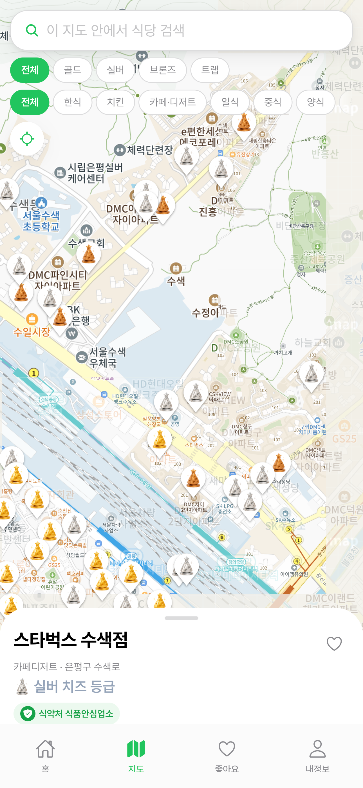
기온·습도·대기질·식약처 식중독 예측을 결합해 자치구별 위험 단계를 5단계로 안내합니다. 고위험 식재료별 위생 가이드도 함께 제공해요.
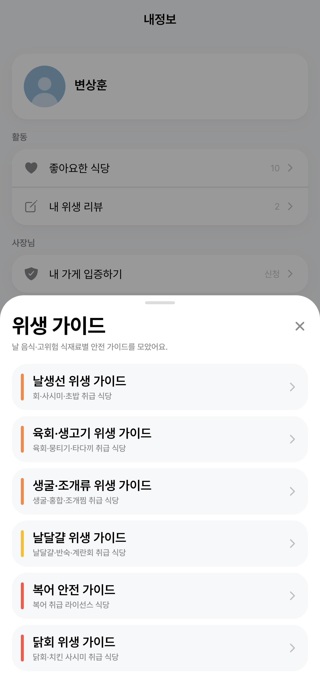
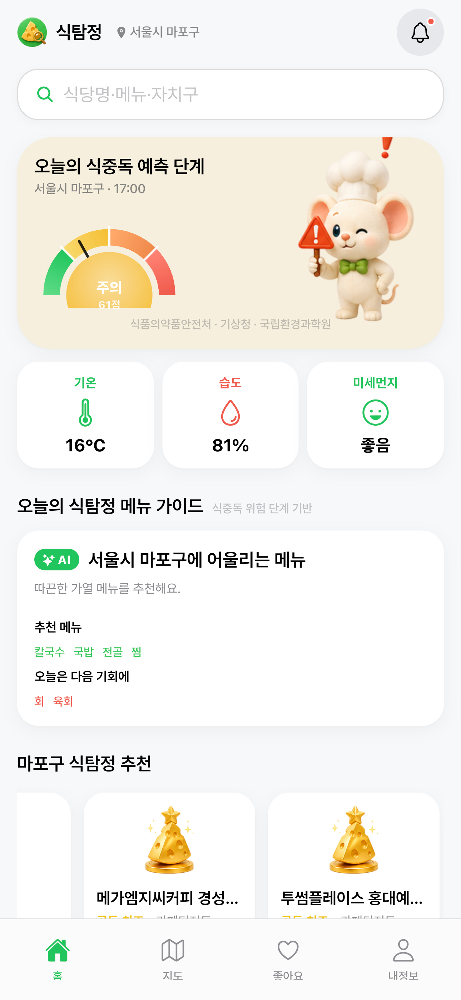
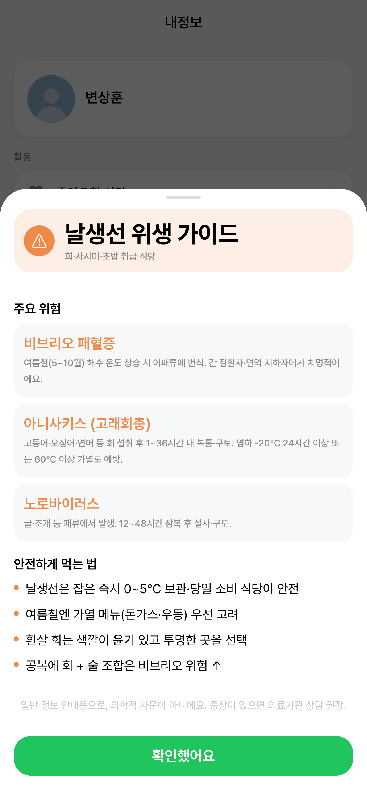
한 달간 6단계로 진행한 식탐정의 개발 흐름
데이터 출처 조사 · 점수 모델 설계 · 디자인 시스템 구축
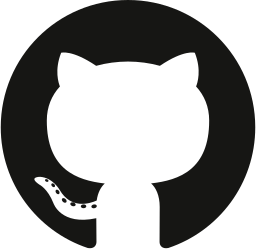
공공데이터 수집 → 좌표 변환 → AI 분류 → 자치구별 split
Expo PWA · 19개 화면 · 카카오 지도 · 검색 · 치즈 등급 UI
Supabase Postgres + Storage — 멀티유저 리뷰·좋아요·사장님 인증
상세 보고서 리디자인 · 데이터 출처 정책 · 위생 가이드 추가
Vercel 자동 배포 · 시연 리허설 · 공모전 제출
모바일 우선 반응형 PWA로 앱스토어 심사를 우회하고, Supabase 백엔드 + Anthropic Claude로 외부 데이터를 빠르게 통합했어요.
5개 기관 · 37 데이터셋 + 1 SDK를 통합해 서울 식당 마스터를 구축했어요.
코딩부터 배포·백엔드·AI 협업까지, 단일 워크플로로 통합
2024년 6월, 광주의 30년 유명 고깃집이 손님이 남긴 음식을 재사용한 사실이 드러났습니다. 2025년에는 백종원 더본코리아의 위생 논란이 4개월 연속 폭로되며 소비자 신뢰가 무너졌어요.
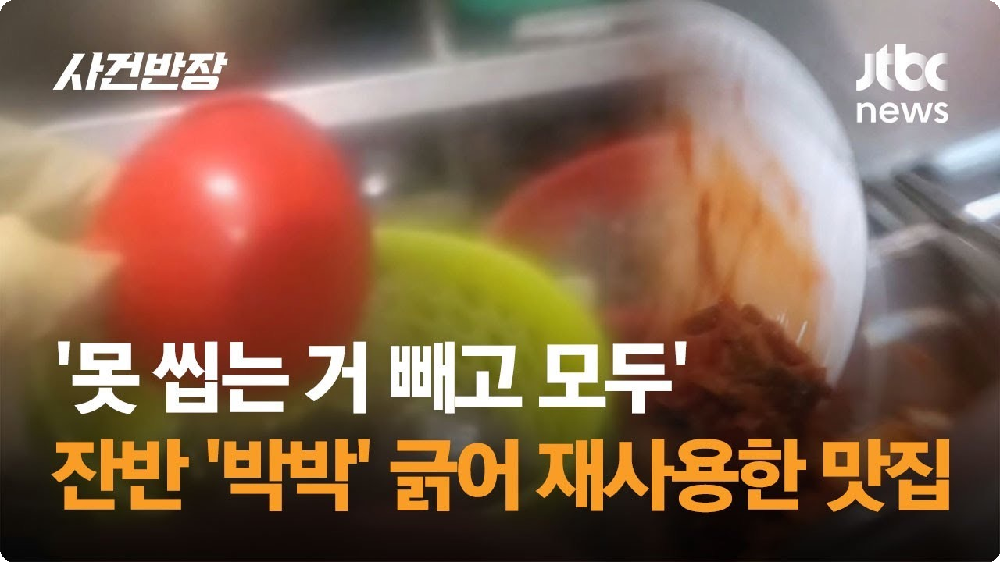
코로나19 이후 위생에 대한 관심은 높아졌지만, 식품 안전 신뢰는 오히려 하락 — 이 비대칭이 신고·민원 폭증으로 행동화되고 있습니다.
공식 인증(식약처 위생등급제, 식품위생법 제47조의2)은 분명 공신력 있는 지표지만, 소비자가 인지하지 못하는 두 가지 결정적 공백이 존재합니다.
식탐정은 식당을 검색·주문하는 플랫폼이 아닙니다. 배달앱·지도앱에서 식당을 고른 뒤 마지막 한 가지 질문 — "이 집, 진짜 믿어도 될까?"에 가장 잘 답하는 위생 검증 보완재입니다.
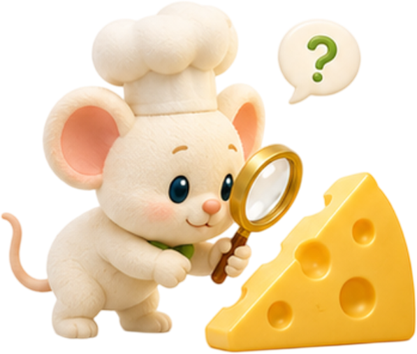
소비자(MZ·부모)와 자영업자가 식탐정을 일상에서 어떻게 사용하는지 흐름으로 보여드려요
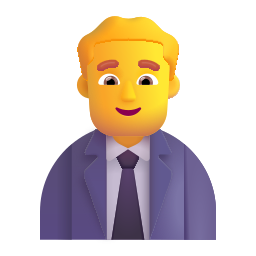
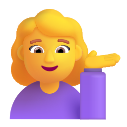
전문성과 일상성이 동시에 충족되는 사분면 — 기존 서비스가 채우지 못한 자리입니다.
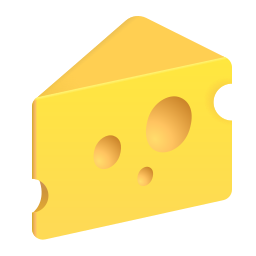
식약처 식중독 지도와 식탐정 메뉴 가이드의 단위·메시지·개인화 비교
B2G 검증 매출 · B2B 자영업자 참여 수익 · 장기 데이터 자산화 — 3축 전략
서울시·자치구는 이미 위생 캠페인 예산을 보유하고 있지만 시민 도달률이 낮습니다. 식탐정은 이 한계를 메우는 공공 검증 채널이 됩니다.
위생등급 미취득 88% 식당의 영세·중소 자영업자가 핵심 고객. 만석닭강정 매출 회복 사례처럼 위생 개선 = 매출임을 증명한 사장님이 적극적 참여자가 됩니다.
식탐정이 누적하는 시간별 위생 점수·메뉴 위험도 데이터는 시간이 갈수록 가치가 커지는 자산입니다.